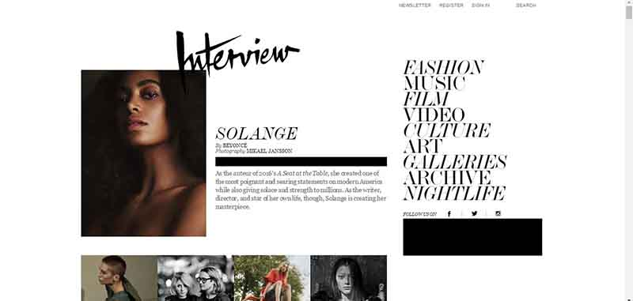

Entry 6
Chapter eleven of Don’t Make Me Think states that aside from being well-designed and easy to navigate, a website should function in a way that reflects the user’s needs. Krug makes the analogy that the website should be a “mensch”, or person with integrity and honor.
To clarify his point, Krug details the time he booked a flight and then found out that there was a potential union strike the day of his flight. He was worried that he wouldn’t be able to get to his destination on time, and checked the airline’s website in search of updates and more information. Despite digging through a number of webpages, Krug did not find any information about the strike but saw many promotions and advertisements. He left the site feeling frustrated with the company. The experience made him feel like the website did not have his best interests in mind.
Krug specifies some points that will keep the “reservoir of goodwill” full and some other points that will deplete the reservoir. These points include “apologize” and “put effort into it.”
The site that I think has kept users happy for quite some time is Google Maps. Although it is more used as an app and less as a website, Google Maps has come a long way from its formative years of being unreliable and often inaccurate to now being a staple to every traveler’s arsenal of navigation tools. When first typing in your destination, Google Maps makes several attempts at guessing where you are going, thus fulfilling Krug’s point that a website should
“Anticipate questions and answer them beforehand.” One could even argue that Google Maps takes this concept one step further. It expects questions from the user about where something is or how to get there, and tries to guess what the user is looking for.
Another thing that Google Maps does really well is adapt to the situation, making it easy for it to recover from a mistake. When a user types in a location that the website/app does not recognize, it prompts an “add a missing place or public landmark” link. It does not apologize for not having the link, as Krug suggests websites do, but instead asks the user for more information so that it can increase its own reservoir of information.
I think that Krug touches on several important points about website design here, but I also think that as artificial intelligence (Siri, Alexa) and various sophisticated tools (self-driving cars) are developed, we are going to see a trend of technology not only saving the user the effort of thinking, but also thinking for the user.
Studio 5 Interface
Entry 5
For this studio I used the library Animate.cssThis studio was challenging for me because I wanted to include interactive elements that I hadn't practiced before. Through the process of troubleshooting and trying out different ways to solve problems, I realized that understanding JQuery would have been very helpful in this studio exercise. Javascript has the ability to change CSS easily, but lacks the "shortcuts" that JQuery provides to make the interface flow smoother. Due to the time crunch, I decided to leave JQuery for another day and focus on what I could do with Javascript. While the end product is not what I had hoped it would be, I discovered a lot of good tools and tricks when working on this studio that I am sure will come in handy when I want to implement more complicated processes in my final project.
In terms of interfaces, this studio has a vertical scroll that is guided by a series of yellow arrows. This simple navigation tool simplifies the journey through the page and the amount of clicks the user has to get from one trivia question to another. I chose colors that contrasted with each other, so that the user would know immediately what was meant to be clicked and what was stationary. The animation really helps liven up the page a bit and makes it a little more interesting to interact with. Overall, I think that Animation.css is like the icing on the cake of a good website. It doesn't provide much structural support for the site itself, but makes the user experience much more unique.

Studio 4 Interface
Entry 4
For Studio 4, I was inspired to make a summer-themed website. I included more interactive and animated elements into the design to catch the users attention the moment they click into the site. I think that animated elements are important because the viewers attention is becoming shorter and shorter, and people's eyes are naturally drawn to things that are in motion. In addition, I made sure to have visual hiearchy in the type and avoid fonts that look too similar. This helps differentiate which text is supposed to be read first. Lastly, I made the images on the page pretty big and colorful. I think that keeping a primary color palette helps make the color pop more. The colors set the tone of the website and help indicate what it is about.

Studio 3 Interfaces
Entry 3
I made an interactive interface featuring the books that I have in my apartment. I have always gravitated towards clean and minimal interfaces, so when designing this webpage I purposefully kept the elements simple. I think that the content speaks for itself and I didn't want the book covers to get lost in any extra design elements. Because clarity is an important aspect of user interface, I figured that keeping it simple was an advatage. The slight rotation of the book covers on hover lets the user know that these elements are interactive, and the yellow button pops up to give suggestions as what the user should do next. Giving the user these clues helps direct them to the purpose of the site. I didn't want to make everything too explicit and explain it in the header, but I do think that adding the pop-up button is a slight nudge in the right direction. I decided to make the button yellow because it contrasts with the rest of the website and is one of the more eye-catching colors. I think that the book covers themselves are what really make the website interesting, and I can see how adding more books would make the website look more interesting. Because there is already so much design on each of the book covers, it's fun to see them displayed in such a digital way and on a stark white background.
Evaluating Forms
Entry 2
Forms are sneakily a part of our everyday lives, but often times we simply give them names to differentiate their functions. Emails, search engine bars, online text messaging systems, and Buzzfeed quizzes are an offshoot of the simple idea of taking user input to generate results. My own most commonly used type of form would be email, specifically Gmail. I like keeping the aesthetics of it pretty simple, so I avoid customizing any colors and fonts and installing add-ons. Even at its bare minimum, Gmail is a pretty powerful tool for any students or working professional. With emails popping up in chronological order, the interface provides clarity to the user. The horizontal layout of information such as sender, subject line, and time stamp allows the user to quickly scan for the basics. The lack of hierarchy in the text is purposeful because every user digests information a little differently. One might look at the sender first, while the other scans the subject line. The minimalism allows for flexibility and customization later on.
The purpose of Gmail is easily communicated through the red button on the left side of the interface. As one of the few bits of color, the "Compose" button clearly stands out and clearly states that this is a tool for writing and sending emails. I think that the simplicity in the layout is crucial the the success and widespread use of Gmail as the email of choice. Without the clarity of information, simplicity of interface, and purposeful use of design elements, the design would not be as powerful.
User Interfaces: Interview Magazine
Entry 1
With it's impactful use of typography and asymmetrical layout, Interview Magazine stands out as a web publication for interesting user interface. The site was clearly designed to mimic a magazine spread, and judiciously spreads out headlines and images throughout each section. This unique look makes the website a memorable one, and certainly captured my attention upon arriving on the landing page. The landing page is also a continuous scroll, making it a little harder to reach the content but also makes the user feel like they are reading the newspaper. I think that the navigation is easy to use because it is fixed at the top of the page, and there is a clear visual hiearchy. My critique would be that the text looks a little squished together in some of the links, and the italic font isn't the easiest to decipher. Overall, I really like the unique layout, that while is unconventional is still anchored by an easily accesible navigation.
